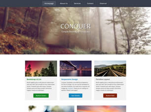

A small screen of the Conquer Bootstrap templateThe Conquer template is a really starting palce for new learners. They have the opportunity to build something they can feel proud of while still being challenged. The Conquer template utilizes bootstrap, but it is important to avoid using this to build the project. This template offers many different layouts and challenges that a web developer may encounter in the real world. This forces new learners to think for themselves and delve into new tecnologies like flex box and floats to gain confidence in cCSS layout